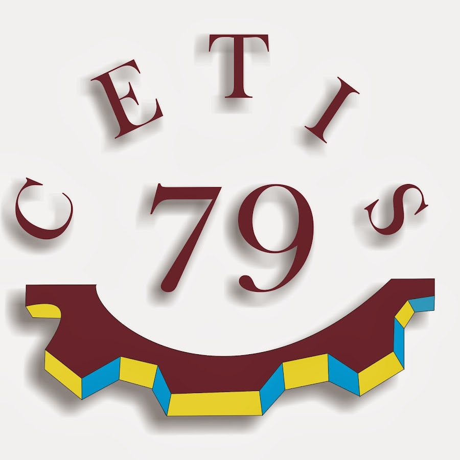
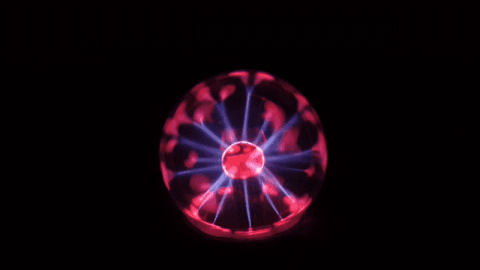

CENTRO DE ESTUDIOS TECNOLÓGICOS
TECNOLOGÍA INDUSTRIAL Y DE
SERVICIOS NUM 79

ROMERO MARTÍNEZ EMILIANO
2°O
MOD I SUB-I
LA TRANSFORMACIÓN DE LA ENERGÍA Y SU INTERACCIÓN CON LA MATERIA
INSTALA Y CONFIGURA EQUIPOS DE COMPUTO Y PERIFÉRICOS

ALUMNO:
EMILIANO ROMERO MARTÍNEZ 2°O
GRUPO 2°O
PÁGINA WEB
El objetivo de esta página es la de ser un recopilado de todas las progresiones del libro de la "Conservación de la energía y sus interacciones con la matería."
FECHA: 27/6/2024
PÁGINA WEB
El objetivo de esta página es la de ser un recopilado de todas las progresiones del libro de la "Conservación de la energía y sus interacciones con la matería."